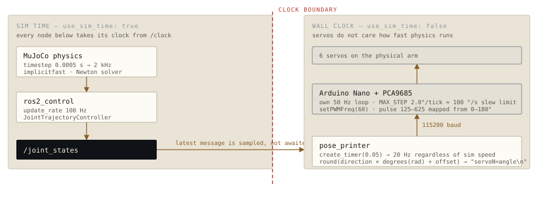

Physics first, servos second.
The simulator is not a preview of the robot. It is the robot, as far as the rest of the stack is concerned — and the physical arm is a follower attached to its output.
The scene builds itself from the URDF
Maintaining a robot description twice — once for ROS and once for the physics
engine — is a reliable way to end up with two subtly different robots. Instead,
generate_mjcf.py loads the installed URDF through MuJoCo's own
parser, rewrites the package:// mesh URIs into real paths, saves the
result as MJCF, and injects position actuators for the five driven joints.
Reading the installed URDF rather than the source one matters: it is the same file the ROS nodes resolve at runtime, so the simulated arm and the planned arm cannot disagree about link geometry.
Physics
timestep 0.0005— 2 kHzimplicitfastintegrator, Newton solvernoslip_iterations 10- Gravity −9.81 m/s²
Scene
- Static table, 0.3 × 0.3 m top
- Target cube ≈26 × 26 × 22 mm on a free joint
- High-friction gripper pads,
condim 6 - Actuators
kp 100 kv 10; fingers force-limited to ±2 N
Two kilohertz is high for an arm this size, and it is there for one reason: grasping. Contact between a small gripper and a small cube is stiff and easy to resolve badly. A coarse timestep produces cubes that squirt out of the fingers or jitter through the table, which would teach a policy to imitate physics bugs. The no-slip iterations and the high-friction contact parameters on the finger pads are part of the same fix.
MuJoCo is the controller manager
Rather than running a separate ros2_control_node alongside the simulator,
the mujoco_ros2_control plugin embeds the controller manager inside the
physics process and publishes /clock. There is one process, one clock, and
no synchronisation problem between the physics loop and the control loop.
| Controller | Joints | Type |
|---|---|---|
| robotic_arm_controller | joint_1 … joint_4 | JointTrajectoryController, 100 Hz |
| hand_controller | end_effector_joint | GripperActionController |
| finger_controller | both finger joints | JointGroupPositionController |
Two custom plugins make the scene trainable
A physics scene on its own is not a task. Two small C++ plugins turn it into one:
ObjectStatePlugin
Reads the cube's free-joint pose straight out of MuJoCo's state and publishes it on /object/position roughly every 100 sim steps. This is the "cheating" observation a real robot would need a camera for — and having it lets the policy be trained before the perception problem is solved.
ResetPlugin
Listens on /sim/reset, resets the simulation, and drops the cube at a new random spot — ±5 cm laterally, 10 to 22 cm out. Without randomisation, a policy learns one trajectory rather than a skill.
The design decision: skipping the planner
move_server is a persistent node that listens on /move_to and
drives the arm to a Cartesian point. MoveIt is available and configured — and it
deliberately does not use it for this path.
A motion planner is built to find a good, collision-free trajectory, and it is allowed to take time doing so. Teleoperation has the opposite requirement: the target moves ten times a second, so a trajectory that is optimal but arrives 300 ms late is worse than a crude one that arrives now. Planning the previous target perfectly is wasted work when it has already been superseded.
on each /move_to message 1 bounds-check the point against the workspace box 2 seed gradient IK with the current joint state, not a neutral pose 3 solve (~50–150 ms) 4 cancel any goal still in flight 5 send a single-point trajectory, time_from_start 0.15 s 6 publish success or failure on /move_to/result
Seeding from the current joint state is what makes step 3 cheap. Consecutive targets are close together, so the solver starts near its answer and needs far fewer iterations than it would from cold — and it also keeps the arm from teleporting between distant IK solutions that happen to reach the same point. Cancelling the in-flight goal means the newest command always wins, so the arm tracks the operator instead of queueing behind them.
The solver minimises Cartesian distance with central-difference gradients:
epsilon 0.001 rad, learning rate 0.05, a 1 cm tolerance, joint clamping
every step, and a stall detector that gives up after 50 iterations of no progress.
Orientation is unconstrained — a legitimate simplification for a top-down gripper,
and one that halves the search.
Move your cursor inside the panel
move_server seeds from the current joint state. Because it
runs on a fixed iteration budget per frame you can watch it converge — the lag
you see when the target jumps is the real cost of gradient descent, not an
animation. The serial row applies pose_printer's actual
joint-to-servo mapping.
Mirroring to the real arm
Sim-to-real here is deliberately literal. The simulation runs the task; the
physical arm subscribes to /joint_states and copies it. There is no
separate hardware control path to keep in sync, and anything that can drive the
simulator — keyboard, glove, or trained policy — drives the real arm for free.

pose_printer samples the latest joint state rather than waiting for one, so the two domains never block each other.
The subtlety is timekeeping. Every node inside the simulation takes its clock from
/clock, so if physics runs at half speed, they all slow down together —
which is correct. Servos do not work that way. pose_printer is therefore
pinned to use_sim_time: false, so its 20 Hz timer keeps wall-clock rate
whatever the physics is doing. It samples the most recent joint state each tick
rather than consuming a queue, so a slow simulation produces smooth, slightly stale
servo motion instead of a backlog.
Radians to servo degrees
The conversion is a per-joint direction and offset, applied in one line and recorded in one table. Physical mounting decides the numbers: some servos are installed facing the other way, and each has its own zero.
final_angle = round(direction × degrees(joint_rad) + offset) joint_1 → servo0 dir +1 offset 90 joint_2 → servo1 dir -1 offset 50 joint_3 → servo2 dir -1 offset 25 joint_4 → servo3 dir -1 offset 55 end_effector_joint → servo4 dir -1 offset 210 servo5, the gripper, is commanded directly over /arm/servo_commands rather than derived from joint_states
Those constants are not guessed. calibrate.py walks each servo
interactively: it resets the simulation to a home pose, lets you nudge the physical
servo with the arrow keys until it matches, then drives the simulated joint 30° and
checks which way the real one went. Direction and offset fall out of that, and the
loop makes a fiddly, error-prone job repeatable after a rebuild.
The Arduino protects itself
The firmware does not blindly follow. It runs its own 50 Hz loop and slews toward the commanded angle at a maximum of 2° per tick — about 100°/s — so a bad command, a dropped connection, or a large jump in the simulation cannot snap a servo across its full range and damage the linkage. The gripper is exempt, because grasping needs to be immediate.
| Board | Arduino Nano driving a PCA9685 over I²C at 0x40 |
| Serial | 115200 baud, newline-delimited servoN=angle |
| PWM | 60 Hz, pulse counts 125–625 mapped from 0–180° |
| Slew | MAX_STEP 2.0° per 20 ms tick |
Running it
ros2 launch arm_bringup mujoco.launch.py simulation only ros2 launch arm_bringup mujoco.launch.py headless:=true no GUI ros2 launch arm_bringup mujoco_mirror.launch.py sim + real arm ros2 launch arm_bringup mujoco_mirror.launch.py dry_run:=true no Arduino ros2 launch arm_bringup mujoco_mirror.launch.py teleop:=esp32 glove input drive it from a second terminal: ros2 run moveit_controls keyboard_teleop WASD / QE · O and C · R to reset